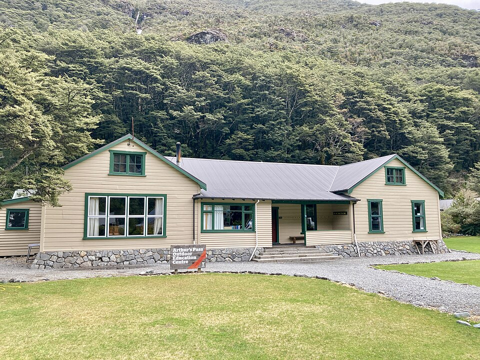

야외 교육 센터 (이미지) · 사진: Mike Dickison / Wikimedia Commons, CC BY 4.0
국제학교 현장학습·캠프(Field Trip·Week Without Walls) — 소풍이 아니라 수업입니다
1. 현장학습은 한 종류가 아닙니다
안내문에 쓰이는 이름이 학교마다 다릅니다. Field Trip, Residential Trip, Outdoor Education, Field Studies, Week Without Walls, Experience Week 같은 표현이 섞여 쓰입니다. 이름은 달라도 성격은 대체로 넷으로 갈립니다.
· ① 당일 수업 연계형 — 박물관·미술관·과학관·공장 등으로 반 단위 이동. 그 과목 단원과 직접 연결되고, 다녀와서 과제가 붙는 경우가 많습니다.
· ② 숙박형 학년 전체 프로그램 — 보통 2~5일. 야외 활동·협동 과제 중심. 학년 전체가 움직이므로 그 기간 정규 수업이 멈추는 형태가 많습니다.
· ③ 선택 활동·대회 원정 — 운동부 경기, 음악·연극 공연, 모의유엔 같은 대회 참가. 방과후 활동과 이어집니다. → 방과후·클럽(ECA·CCA)
· ④ 봉사·탐구 여행 — 고학년에서 많고, 교육과정의 활동 요건과 연결되는 경우가 있습니다.
가정에서 먼저 가릴 것은 간단합니다. "이것은 수업인가, 선택 활동인가." 이 한 줄이 이후 판단을 거의 다 정합니다.
2. 한국 학교의 소풍·수학여행과 다른 점
| 항목 | 한국 학교(소풍·수학여행) | 국제학교(현장학습·캠프) |
|---|---|---|
| 성격 | 학사 일정 중 행사 | 수업일로 운영되는 경우가 많음 |
| 목적 | 견학·친목 | 단원·활동 요건과 연결된 학습인 경우가 있음 |
| 비용 | 학교가 일괄 안내 | 프로그램별 참가비 별도, 환불 조건이 따로 있음 |
| 서류 | 동의서 정도 | 참가 동의 + 의료 정보·알레르기·보험, 국외면 여권·체류 서류 |
| 불참 시 | 대개 결석 처리 없이 조정 | 수업일이면 결석으로 기록될 수 있음 |
| 다녀온 뒤 | 특별한 과제 없음 | 보고서·발표·성찰 기록이 붙는 경우가 있음 |
※ 운영 방식은 학교마다, 학년마다, 프로그램마다 다릅니다. 위 표는 "한국 학교와 발상이 다르다"는 점을 보여 드리기 위한 정리입니다. 이 글로 판단하지 마시고 학교 안내문을 기준으로 삼으세요.
3. "빠져도 되나요" — 판단은 두 줄로 끝납니다
사정이 생겨 참가가 어려울 때가 있습니다. 가족 일정, 아이의 건강, 비용 모두 현실적인 이유입니다. 이때 묻는 순서를 바꾸시면 됩니다. "가야 하나요?"가 아니라 아래 두 가지를 먼저 확인하세요.
· ① 그 날이 수업일인가. 수업일로 운영되는 프로그램에 빠지면 결석으로 기록될 수 있습니다. 가족 여행과 겹칠 때 특히 문제가 됩니다. → 출결 규정
· ② 다녀와서 낼 것이 있는가. 현장학습 자체에 점수가 붙지 않더라도 과목 과제나 활동 기록과 연결돼 있으면, 참가하지 않은 아이는 그 부분을 따로 채워야 합니다.
둘 중 하나라도 해당되면 결정하기 전에 담당 교사에게 대체 과제가 있는지 물어보시는 편이 안전합니다. 결정한 뒤에 통보하는 것과, 결정 전에 묻는 것은 결과가 다릅니다. 대부분의 학교가 사정 자체를 문제 삼지는 않지만 사후 통보는 기록을 바꾸기 어렵습니다.
4. 주재원 가정이 자주 놓치는 다섯 가지
· ① 여권과 체류 서류. 국외로 나가는 일정이면 여권 유효기간과 재입국 조건을 먼저 봐야 합니다. 아이의 체류 자격에 따라 준비물이 달라지고, 처리에 시간이 걸립니다. 안내문을 받은 날 바로 확인하세요.
· ② 동의서 마감이 이릅니다. 참가 동의와 의료 정보 제출은 출발일이 아니라 몇 주 전에 마감되는 경우가 많습니다. 기한이 지나면 자리가 넘어가기도 합니다.
· ③ 참가비 환불 조건. 신청 후 취소하면 전액을 돌려받지 못하는 경우가 흔합니다. 숙소·항공이 미리 묶이기 때문입니다. 신청 전에 환불 조건부터 보세요.
· ④ 의료·알레르기 정보는 영어로 정확하게. 평소 복용하는 약, 알레르기, 수영 가능 여부 같은 항목은 한국어 표현을 그대로 옮기면 뜻이 흐려집니다. 약은 성분명까지 적어 두시는 편이 안전합니다.
· ⑤ 아이에게는 "왜 가는지"를 먼저. 한국에서 온 아이들은 모르는 친구들과 며칠을 보내는 일 자체를 부담스러워합니다. 영어가 아직 편하지 않으면 더 그렇습니다. 가기 전에 활동 내용을 함께 읽어 보기만 해도 달라집니다.
5. 집에서 할 네 단계
· ① 학년 초에 학사 일정에서 그 주를 찾아 둔다. 숙박형 프로그램은 보통 해마다 비슷한 시기에 있습니다. 미리 알면 가족 일정과 겹치지 않게 짤 수 있습니다.
· ② 안내문을 받은 주에 네 가지만 메모한다. 날짜 / 수업일 여부 / 참가비와 환불 조건 / 서류 마감일. 이 넷만 적어 두면 나중에 급하게 결정하지 않아도 됩니다.
· ③ 떠나기 전 주에 과목별로 한 줄씩 확인한다. "그 주에 내야 할 것이 있는가." 사나흘 자리를 비우는 사이에도 다른 과목의 기한은 계속 돌아갑니다. → 숙제·과제 관리
· ④ 돌아온 주에 이어 붙인다. 빠진 수업의 필기를 통째로 베끼게 하는 것은 효과가 낮습니다. 다음 내용과 연결되는 지점 한두 개만 찾아 메우는 편이 훨씬 빠릅니다.
6. 현장학습은 사실 영어가 늘기 좋은 구간입니다
의외로 그렇습니다. 교실에서는 아이가 조용히 앉아 있으면 하루가 지나가지만, 숙박형 프로그램에서는 말을 해야 하는 상황이 계속 생깁니다. 조를 짜고, 역할을 정하고, 반대 의견을 말해야 합니다. 학기 중 어떤 수업보다도 쓰는 영어가 아니라 쓰이는 영어를 많이 접하는 며칠입니다. → 그룹 프로젝트·발표 평가
그래서 저희는 현장학습 전후로 수업을 빼지 말고 옮기시라고 권해 드립니다. 떠나기 전 주에 한 번 잡아 그 주 과제를 끝내 두고, 돌아온 주에 한 번 잡아 밀린 지점을 이어 붙입니다. 이렇게 하면 며칠을 비워도 성적 그래프가 꺾이지 않습니다.
정리
국제학교의 현장학습은 소풍이 아니라 수업인 경우가 많습니다. 그래서 참가 여부를 고민하기 전에 그 날이 수업일인지와 다녀와서 낼 것이 있는지를 먼저 확인하셔야 합니다. 주재원 가정은 여권·동의서 마감·참가비 환불 조건에서 가장 많이 놓치고, 이 셋은 안내문을 받은 주에 메모해 두면 해결됩니다. 그리고 현장학습 주간은 공부를 멈추는 때가 아니라 앞뒤로 수업을 옮기는 때입니다. 30분 무료 상담으로 아이의 학사 일정에 맞춰 수업 계획을 함께 짜 드리겠습니다.